Project 3: Camera Calibration and Fundamental Matrix Estimation with RANSAC
In this project, several tasks has been done.
- Estimate camera center coordinates given corresponding 2D and 3D points in one scene.
- Estimate fundamental matrix given corresponding 2D points across two related images with RANSAC.
A. Estimate camera center. The equation of projecting 3D point to 2D point is as below.
 Figure1: solve camera parameters
Figure1: solve camera parameters
Note that here matrix M is not a square matrix and therefore it is not simply invertible. Therefore, a linear least square
is used to solve M. In this project, set m
34 equals to 1 and the equation comes to a Ax = b form:
 Figure2: Math basis in solution1
Figure2: Math basis in solution1
Here, (X, Y, Z) is the world 3D coordinates and (u, v) is the corresponding 2D pixels. The key point to solve this question is
to put the point coordinates to the right place in matrix A and use np.linalg.lstsq() to solve parameters.
The estimated projection matrix is
[[0.768, -0.494, -0.023, 0.007], [-0.085, -0.091, -0.9065, -0.088], [0.1827, 0.2988, -0.074, 1]].
And the total residual compared with ground truth is 0.0445, which is smaller than required 1.
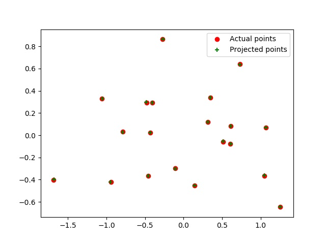
Figure3: Result of projection matrix estimation
After getting matrix M, it is possible to tease it apart into the more familiar and more useful matrix K of intrinsic parameters
and matrix [R | T] of extrinsic parameters. Note that M = (Q | m
4). Therefore, camera center C can be solved by:
 Figure4: Math basis to solve camera center
Figure4: Math basis to solve camera center
Here Q is just the first 3 columns in matrix M and m
4 is the 4th column. And we just simply muliply them.
In this case, the estimated location of the camera is
(-1.5126, -2.3517, 0.2827). In project hints, the given camera
center is (-1.5125, -2.3515, 0.2826), which is very close to my answer.
B. Estimate fundamental matrix with RANSAC. It has two parts: a. calculate fundamental matrix; b. get a robust one with RANSAC.
To do part a, a 8-points algorithm is implemented. It is named 8-points because it requires 8 corresponding pairs to
solve F. Though F is a 3x3 matrix with 9 values, f33 is contraint by the system of equations. Therefore,
only the remaining 8 parameters needs additional points information. So first we should write down the system of equations as
below and then we can solve it with numpy SVD. It is worth to mention that the V matirx calculated by np.linalg.svd() has a
transpose relationship with matlab's version.
 Figure5: Write down the system of equations.
Figure5: Write down the system of equations.
Next is to enforce singularity constraint. The reason to do so is that the homogeneous only contains two dimension information,
but it acctually has 3 dimensions. So rank of F matrix is 2 and we need to enforce singularity contraint otherwise epipolar lines
are not coincident. So we use svd on F and then set the last diagonal value of S to 0.
 Figure6: Reasons to do normalization
Figure6: Reasons to do normalization
Finally is the normalization. Matrix A is calculated by muliplying image coordinates. So the scale of value may vary.
Therefore, a normalization here is to improve the numerical condition. In this project, the normalized coordinates can
be computed by:
 Figure7: coordinates normalizatn
Figure7: coordinates normalizatn
Here c
u and c
v is mean of u and v coordinate. And s is the standard deviation after substracting the means.
After computing normalized F, the original version can be computed by:
 Figure8: denormalize fundamental matrix
Figure8: denormalize fundamental matrix
Epipolar lines are drawn to evaluate the estimation result of fundamental matrix with given points and images.
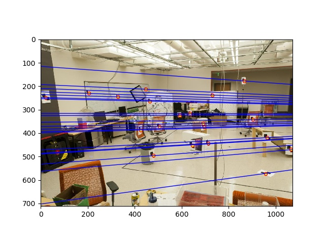
(a) epipolar lines
 (b) epipolar lines
(b) epipolar lines
 (c) estimated fundamental matrix of pic_a and pic_b
(c) estimated fundamental matrix of pic_a and pic_b
Figure9: Evaluation of fundamental matrix
From above pictures, it can be seen that the epipolar lines have crossed through each pair of corresponding points,
which shows a good result.
After validating fundamental matrix implementation, the final step is to adjust F with RANSAC, which is like a
regression of fundamental matrix to remove multiple outliers. The procedure of RANSAC is listed below:
- Sample (randomly) the number of points required to fit the model
- Solve for model parameters using samples
- Score by the fraction of inliers within a preset threshold of the model
In this case, step1 means to sample several corresponding points(>8 pairs) to compute parameters for fundamental fundamental_matrix.
And then x'Fx is used as a quantatitive index to classify inliers and outliers. x'Fx should be very small if the
fundamental matrix is correctly computed and with ground truth matching pairs. Remember that RANSAC has random characteristics, which
means that with fewer iterations, it is possible that it will not converge to a global solution.
Considering the computing efficiency, the iteration step is set 2000 and the threshold is 0.05. This preset parameters will go
through all experiment images.
Test Result
threshold: 0.05
iterations: 2000
1. Mount Rushmore
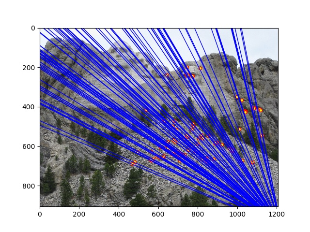
(b): epipolar lines
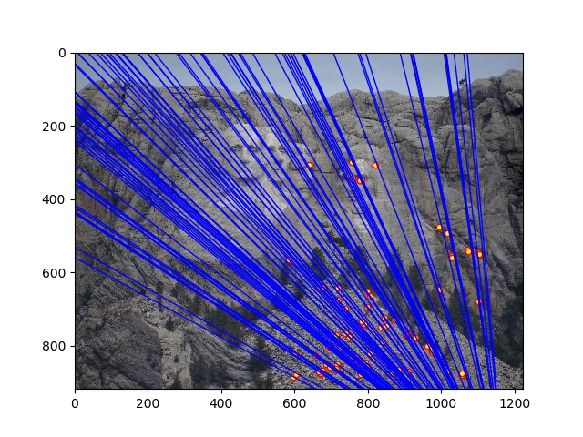
(c): epipolar lines
2. Notre Dame
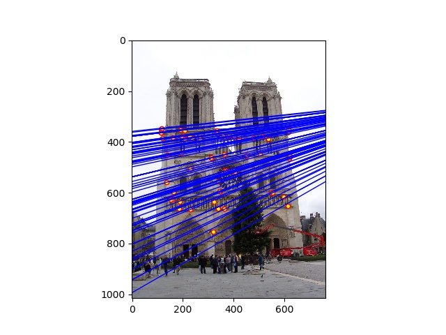
(b): epipolar lines
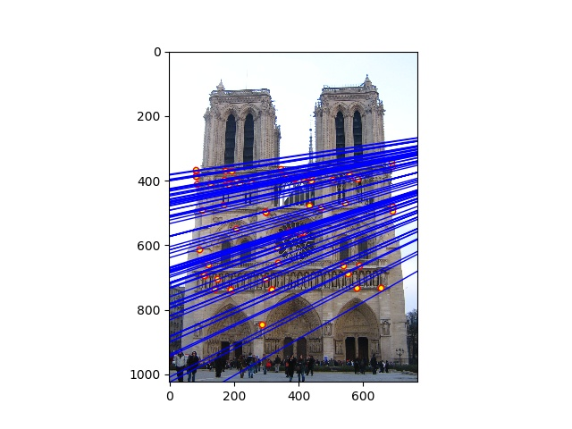
(c): epipolar lines
3. Episcopal Gaudi
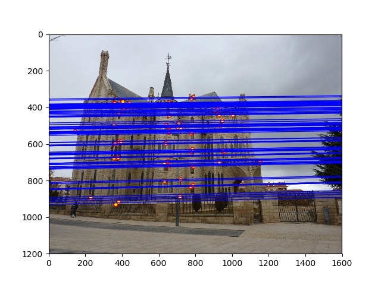
(b): epipolar lines
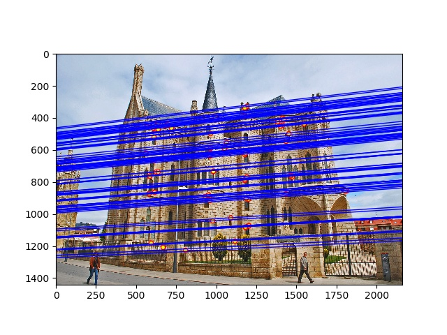
(c): epipolar lines
4. Woodruff Dorm
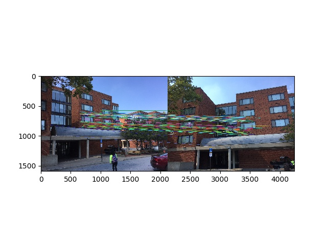
(a): matching points
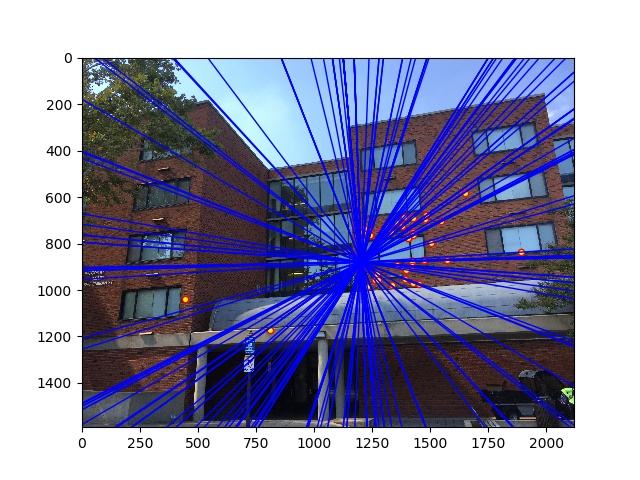
(b): epipolar lines
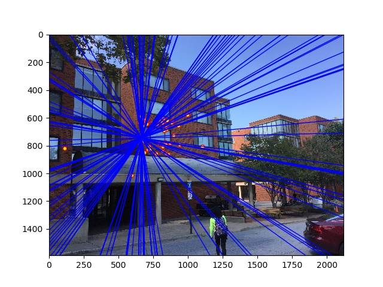
(c): epipolar lines
In the above test result, Mount Rushmore and Notre Dame clearly show to converge at a single point outside the images.
Woodruff Dorm converges in the center of the image. And Episcopal Gaudi shows a perfect result of epipolar lines.
However, the RANSAC shows some randomness on the estimation of the "best" fundamental matrix in the experiment.